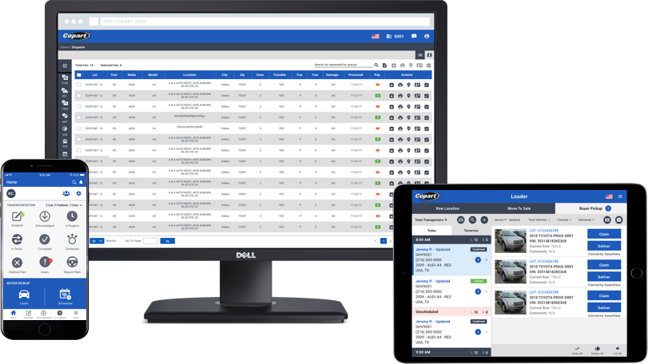

Being the first designer to join Copart’s IT team I was able to work on multiple projects from the ground up and improve existing applications including several desktop apps, two mobile apps and one tablet application. As part of an Agile team that is constantly looking to upgrade their products, some of these designs are a work-in-progress and subject to change.
[Role: UI Designer] . [Deliverables: Wireframes, User-Flows, High Fidelity Mockups] . [Format: Desktop - Mobile - Tablet]
